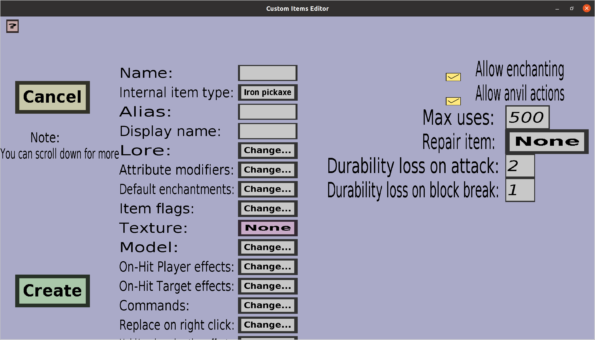

The tool edit menu can be used to edit or create tools. If you just started creating a new pickaxe, it should look like this:
This menu contains everything the base item edit menu has, but more. For a description of all other properties, check the link to the base item edit menu. Additionally, this menu contains the common properties for all custom tools. I will give a description of each property.
Whether this custom item can be enchanted in an enchantment table.
Whether this custom item can be manipulated (repaired, renamed, enchanted...) in an anvil.
The 'Max uses', 'Durability loss and attack' and 'Durability loss on block break' (some tools like tridents and bows have even more of those) determine how many times the custom tool can be used before it breaks. Each time a custom tool is created in-game, it will start with a durability equal to the 'Max uses'. Each time a player attack someone (left-clicks) with the tool, the durability will decrease by its 'Durability loss on attack'. Similarly, each time the player breaks a block with the tool, the durability will decrease by its 'Durability loss on block break'.
The default value of 'Max uses' will always be 500, but you should change this value to whatever you want it to be. The default values of the durability losses will be equal to the values normal minecraft tools would have ( for instance, a pickaxe will lose twice as much durability when it's being used as weapon rathern than being used to break blocks.) You can change these values if you would like, but should normally not do that. You can even change (some of) those values to 0, which would indicate no durability loss at all. If you would set them all to 0, the tool would become basically unbreakable, but you should set the 'Max uses' to -1 instead if you want to make the tool unbreakable.
The item that can be used to repair this custom tool in an anvil. If anvil actions are not enabled, the repair item doesn't matter because it can't be used anyway. To change the repair item, click on the button on the right of 'Repair item:' (initially, it will have text 'None'). Clicking it will take you to the item type selection menu.